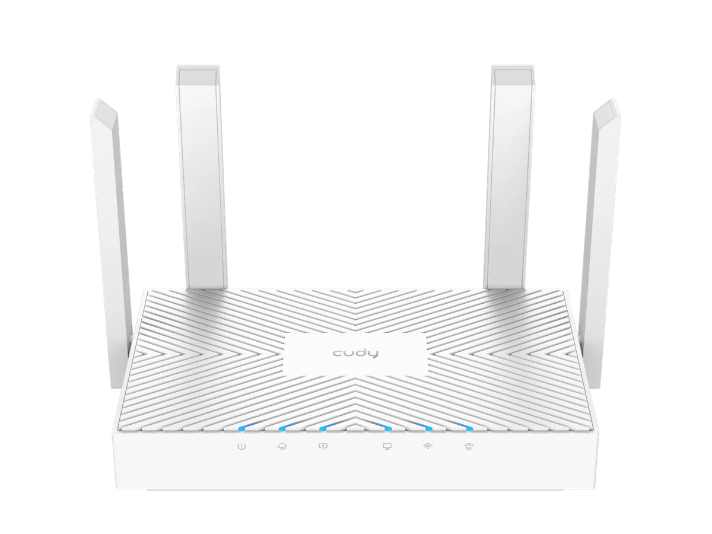
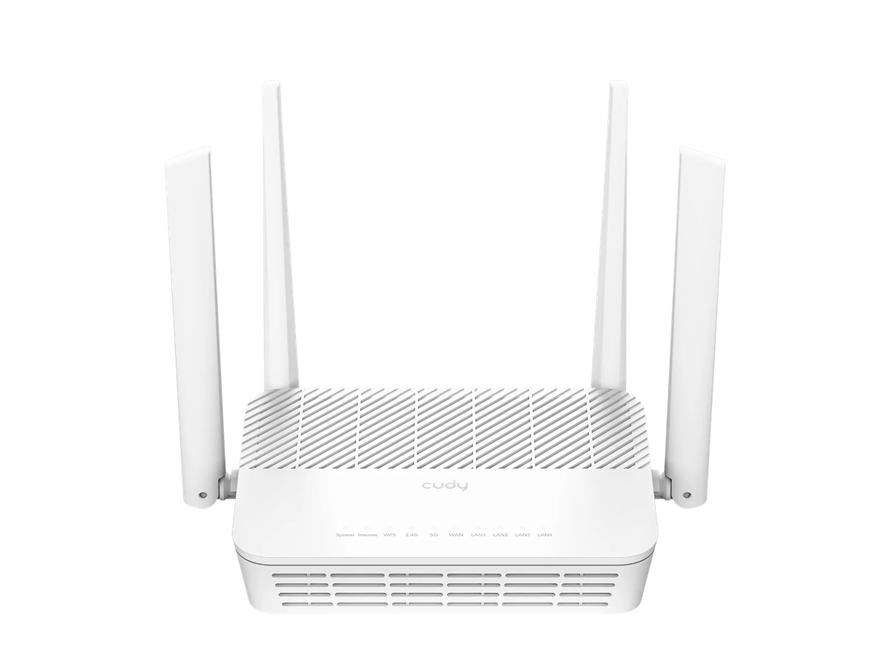
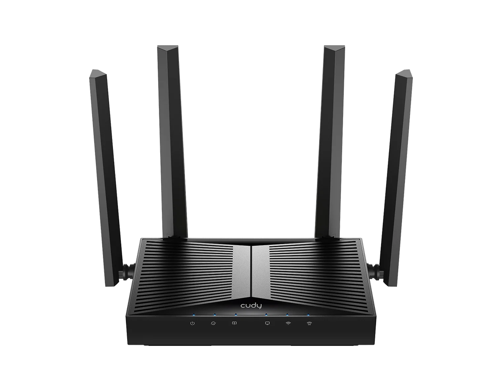
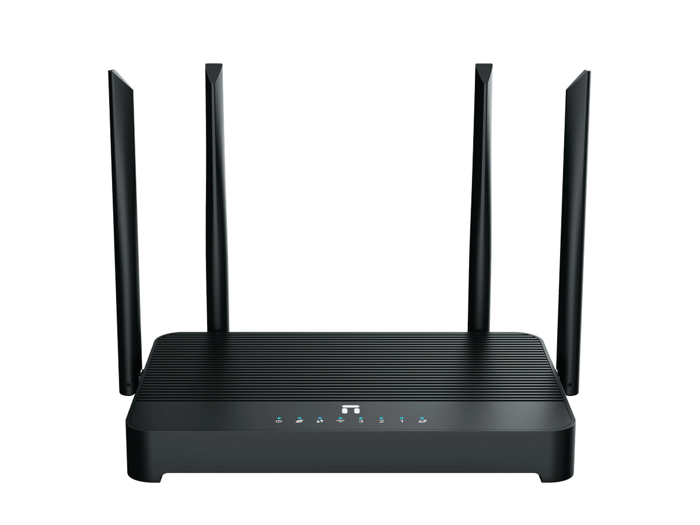
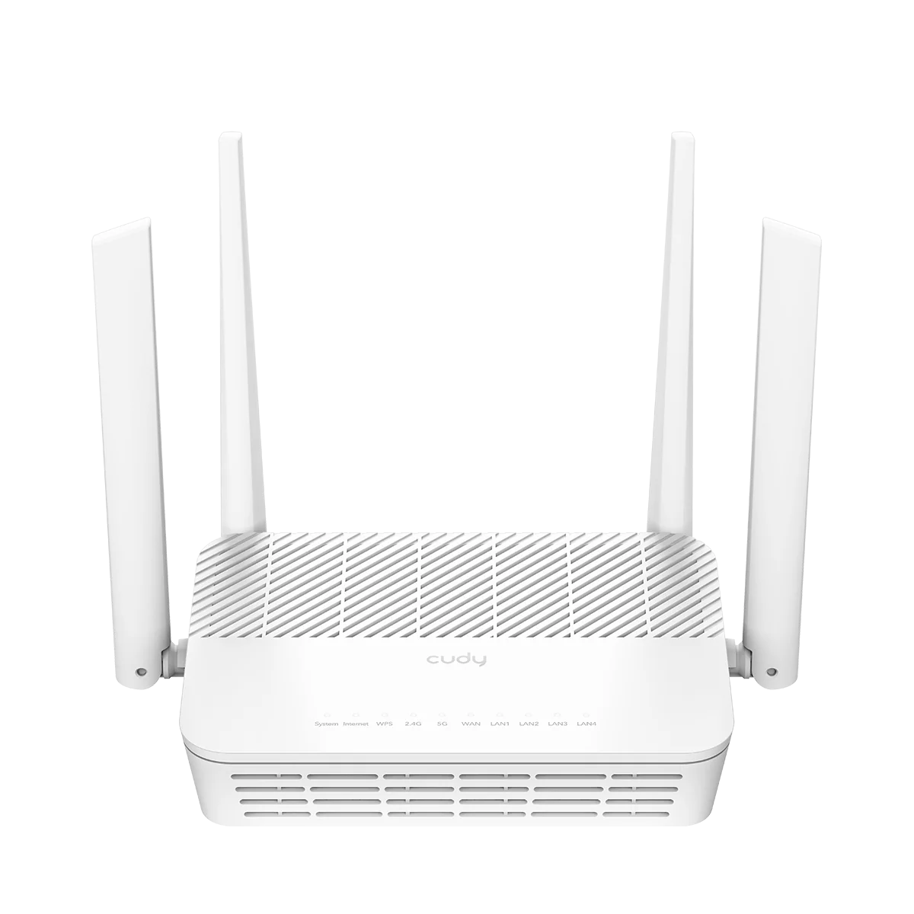

Изолированные сети, VPN и защищённый DNS.
OWPN / SMART NETWORK
Интернет,
который работает.
Роутеры для дома, офиса и путешествий. OpenWrt, VPN, безопасный доступ и настройка за несколько минут.
24/7поддержка
5 миндо запуска
Wi‑Fi 6новый стандарт
ROUTER / 01

1.8 Gbpscurrent throughput
ONLINEsecure tunnel active
SCROLL TO EXPLORE ↓
01 / ЗАЧЕМ OWPN
Обычный роутер раздаёт Wi‑Fi.
OWPN управляет интернетом.
Мы объединили быстрый Wi‑Fi, приватность, обход ограничений и понятное управление в одном устройстве.
Как устроена система ↗Оптимизация маршрутов и приоритет важных устройств.
Гибкие правила, профили и удалённое управление.
Подключите питание — остальное уже настроено.
02 / МОДЕЛИ
Выберите свой OWPN
Шесть моделей для дома, офиса, путешествий и сложных сетевых сценариев. Каждая готова к работе сразу после подключения.
HOME / 01ДЛЯ ДОМА

XIAOMIAX3000T
Производительный Wi‑Fi 6 роутер для квартиры и дома. Подходит для потокового видео, игр, VPN и стабильной работы большого числа устройств.
от 14 900 ₽
PRO / 02ФЛАГМАН
BEST CHOICE

CUDYWR3000S
Универсальная модель с поддержкой Wi‑Fi 6 для домашней сети. Хороший баланс скорости, покрытия и работы с VPN-сценариями.
от 15 900 ₽
TRAVEL / 03ДЛЯ ПОЕЗДОК

CUDYWR3000E
Вторая конфигурация популярной модели для разных вариантов настройки OWPN. Подходит для квартиры, офиса и защищённого доступа в интернет.
от 16 900 ₽
MINI / 04КОМПАКТНЫЙ

CUDYWR3000H
Мощный двухдиапазонный роутер для высокой нагрузки, стриминга и множества подключённых устройств с готовыми сетевыми сценариями.
от 17 900 ₽
OFFICE / 05ДЛЯ БИЗНЕСА

CUDYWBR3000UAX
Гибкая модель для домашнего и мобильного использования с поддержкой современных стандартов связи и защищённой маршрутизации.
от 19 900 ₽
MESH / 06БОЛЬШОЙ ДОМ

NETISNX31
Современный гигабитный роутер для стабильного покрытия дома или небольшого офиса. Оптимален для ежедневной нагрузки и VPN.
от 13 900 ₽

SYSTEM STATUS / ACTIVE03 / КАК ЭТО РАБОТАЕТ
Интернет, который просто работает.
01
Подключите
Питание и кабель провайдера — больше ничего.
02
Выберите режим
Обычный интернет, VPN для всех или отдельные правила.
03
Пользуйтесь
Система сама следит за доступностью и выбирает рабочий маршрут.
FAST / SECURE / OPEN / SMART / FAST / SECURE / OPEN / SMART /
04 / ПОДДЕРЖКА
Мы рядом.
Даже после покупки.
Поможем с подключением, настройкой и нестандартными сценариями.
Написать в Telegram ↗Удалённая настройка
Подключимся и всё проверим вместе с вами.
Обновления
Новые функции и улучшения безопасности.
База знаний
Понятные инструкции без сложной терминологии.
05 / FAQ
Вопросы и ответы
Коротко отвечаем на вопросы о подключении, настройке и работе роутеров OWPN.
Это роутер на базе OpenWrt с готовой настройкой, поддержкой VPN и удобным управлением сетью.
Нет. Роутер поставляется с уже установленной и подготовленной системой.
Да. Подключите кабель из LAN-порта основного роутера в WAN-порт роутера OWPN.
В инструкции доступны DHCP и PPPoE. Раздел Static IP будет добавлен отдельно.
Да. Это делается через панель OpenWrt по адресу 192.168.3.1. Пошаговая инструкция размещена на странице Manual.
Проверьте WAN-кабель, выбранный тип подключения и возможную привязку провайдера к MAC-адресу старого устройства.
Да, если выбранная модель роутера поддерживает два диапазона Wi‑Fi.
Откройте страницу «Инструкция» в верхнем меню или перейдите на manual.html.
READY TO CONNECT?
Выберите роутер,
который подходит вам.
Сравните модели по скорости, покрытию и сценарию использования — для дома, офиса или поездок.